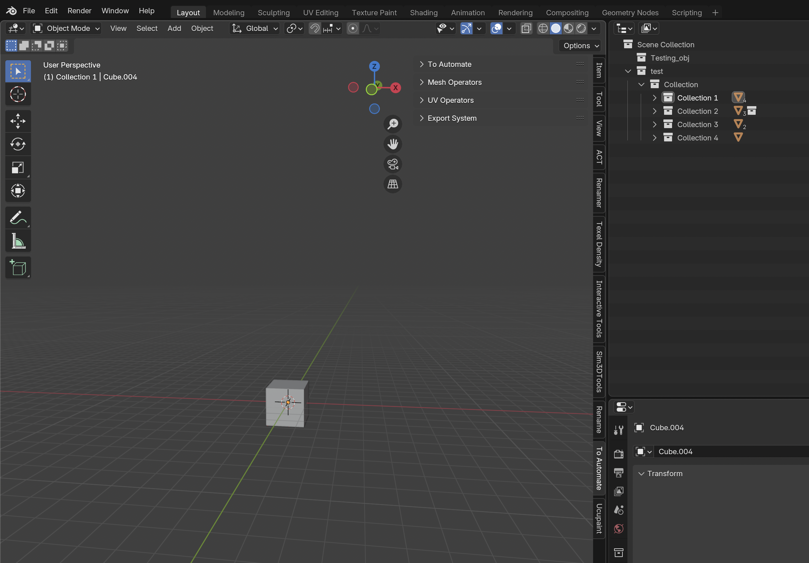
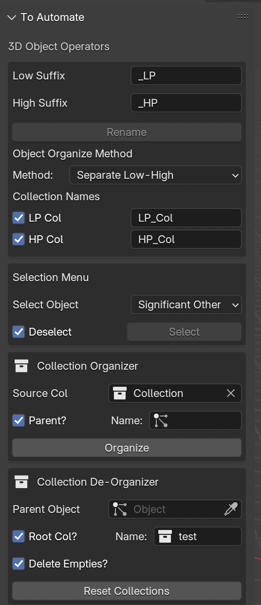
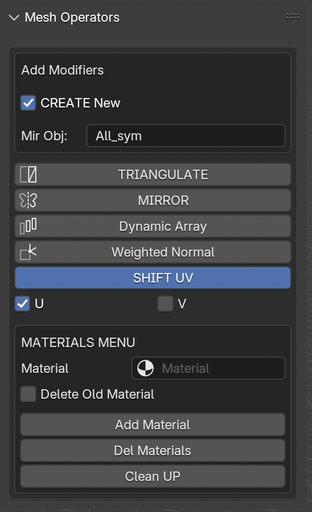
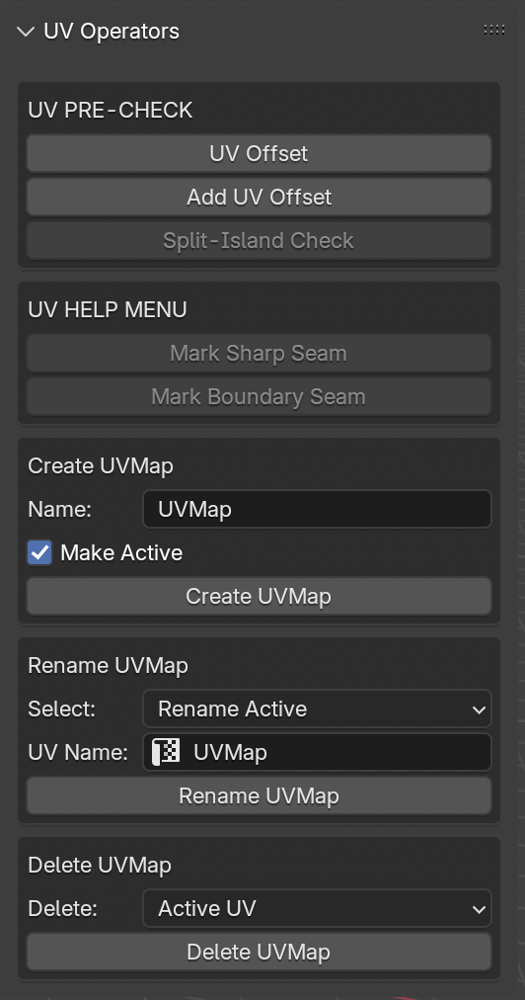
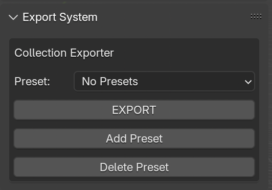

User Interface
The ToAutomate UI is located in the Properties(Press N) Panel of the 3D-View.
Side Panel

Located in the Properties Panel of 3D View, Tap To Automate to get started and you'll see following tool menus.
3D Object Tools

-
Rename: Select Two Object and press
Rename, It Renames the active Object and add '_LP' suffix to it and '_HP' suffix to the other selected object- Rename Operator requires two selected object to make a Low-High Object named Pair
- On Press of Rename, the active Object (named "Cube") get renamed to Cube + "_LP" (
Low Suffix) and second selected object get renamed Cube + "_HP" (High Suffix) - Resulting name of active_object becomes from "Cube" to "Cube_LP"
and forsecondselected object "Cube_HP",
High_name = Low_object_name + high_suffix
-
Object Organize Method
- Method to Organize:
OP1: Separate Low-High: When pressed Rename, Moves the Low and High suffix objects to the individualLow_ColandHigh_ColCollections respectively.
Toggle theCheckin front of LP Col and HP Col to disable moving to collection.OP2: Object Collection: When pressed Rename, Moves both the Low and High suffixed objects to a newObject's nameCollection.
Example: Resulting"Cube_LP"and"Cube_HP"Objects will both be in Collection"Cube".
- Method to Organize:
-
Selection Menu:
OP1: To Check if an object's counterpart (Low or high) exists.OP2: To Check if any object doesn't have it's Counterpart (Low or high) and select them.Note: Works with respect to defined/named LP Col and HP Col in Organize Method
-
Collection Organizer: Converts the Blender's Collection Heirarchy to Empty object-parent collection for the collection tree, Helpful when want to preserve heirarchy for .fbx or other 3D softwares.
Source Col: Select a Source Collection to Convert to Empty-object Parent heirarchy.Parent: Toggle Parent if we want an external Empty-Object that will go on top of the Final src Collection object.Name: Give a name for the External Parent Object, If doesn't exist, will create it
Organize: Press Organize and convert your Collection Heirarchy into empty-parent heirarchy
Mesh Menu

- Modifiers:
- Overview: Applies the following Modifiers to all selected objects.
Create New: If the object already have selected modifier, It'll create an additional new modifier. Helpful when need multiple Mirror Modifiers.TRIANGULATE: Apply to all objects, keeps mesh clean to edit and prepared for export and baking.
Adds a triangulate modifier, withkeep normalstoggledOn(Helpful in keeping normals consistent).MIRROR: Adds a Mirror Modifier to selected object, with some additional properties as a pop up menu.- Opens an Additional Dialogue menu to select the Mirror Origin (A symmetry Object in world center). Or to Select axis for the mirror.
- Applies to all selected objects
Dynamic Array: It's not normal array, it needs two objects specifically. What it does basically is:Requirements: The active object and a second selected object- Dynamic Array calculates the 3D Distance between both objects and adds an array to active object that makes it's Array distance to the calculated distance above.
Weighted Normal: Adds Weighted Normal to all the selected objects.SHIFT UV: Helpful for Mirrors and Arrays, When in game object baking, having mirror for each object, can result in Overlap UVs, so enable SHIFT_UV, and select U or V or both to shift the Mirrored-part's UV out of 1:1 to avoid overlap in main baking region.
- Materials
Material: Select a Material from SceneDelete Old Material: Toggle ON to remove old materials of an object, when adding material from below.Add Material: Adds selected Material inMaterialto all selected objects.- If no
Materialwas selected, a pop-up will come up that asks for a name for the New Material to add to the objects.
- If no
Del Materials: Deletes all Materials of all selected Objects. EverythingClean UP: Removes Unused Materials from selected Objects.
UV Menu

- UV PRE-CHECK: Precheck UV Offset for all selected objects
- Precheck helps to Check
UV Offsetvalue in Modifiers of Object. SpecificallyArrayandMirror'sUV Offset.- If an object's modifier has both U and V are 0. It could lead to UV overlap, so the object is selected.
Add UV OffsetAdds UV Offset to U or V, for the modifiers in an object (ArrayandMirror).- Split-Island Check is a wip operator, that helps select islands that are split in UV Map, let's say an island had 3 or 4. faces, but somehow accidentally, we moved one island separate, this could lead to some little bug in UV. So it selects those parts in the UV. Helpful to open a UV-Editor tab on right of 3D-View.
- Precheck helps to Check
-
UV HELP MENU: Helps in some quick setting Seam operations
Mark Sharp Seam: Marks sharp edges of an object to seams.Mark Boundary Seams: Of the selected faces, the overall boundaries will be marked as seam.
-
Create UVMap: Create UVMap for all selected objects
Name: Name for the UVMapMake Active: ToggleONorOFF: IfON, makes the UVMap of the name as active.Create UVMap: Createas a UVMap to all selected objects of the given name, if already exists in an object, Makes it active( ConsideringMake ActiveisON)
-
Rename UVMap: Renames the UVMap, Select Option for renaming method.
- Rename Option:
Rename Active: Renames the active UVMap of selected object(s).Find and Rename: Finds UVMap of providedfindname and renames it asreplacename.Find Name: Find name to search in the UVMap list.
UV Name: UVMap Name for the final UVMap.Rename UVMap: Operator to do the rename action.
- Rename Option:
- Delete UVMap: Deletes the UVMap, Selection option for Deleting Method:
- Delete Option:
Active UV: Deletes the Active UVMap of the selected object(s).UV Named as: Deletes the UVMap with the given name in the name field.
Delete UVMap: Operator to delete the UVMap(s).
- Delete Option:
CollectionExport Menu


Details:
- Preset Menu Overview:
Preset: Select the Preset from the Presets Menu.Export: If a Preset is selected, Exports the resulting file. (Read below for more details)Add Preset: Adds a new preset for Export.Delete Preset: Deletes the active preset of Export menu
-
Preset Properties:
Preset Name: Rename the Current/Active PresetExport Type:: Source for the objects/Collections to exportCollection Objects: Export the Collection Objects, select Collection in Export Collection Selection Menu.Selected Objects: Exports the selected objects.
File Name: Options for name of the Export file.Project File name: Export the resulting file asBlend_file_name.fbx, Condition being Blend file must be saved in a directory.Custom File Name: Brings out a name field for the export file name.File Name: Provide the file name for the export file. (Don't leave empty)
Export as: Option to select the file extensions or format of file.FBX Export: Makes the final export file as 'My_object.fbx'USDz Export:(NOT IMPLEMENTED)Makes the final export file as 'My_object.usdz'
Export Path: click the folder button to select a directory to export file in, or put the directory in yourself.Substance File?: Click to ToggleONorOFF:- If
OFF: No Extra files apart from mesh file. - If
ON: Creates a Substance Project with the mesh file.Substance Menu:Diff Name: If ON: asks for a name for Substance File, Else, uses the object file name above.Spp Path: File Path for Substance file to be saved in.Tex Path: Textures Export Path for Substance File.
- If
Use File Directory: Saves the file in the File Directory instead of external path provided.Export Frame: Default 0, if changed to let's 10. The final objects/collections will be exported at that timeline frame, Helpful if needed objects at specified frame maybe cuz of required Translation of objects at that frame.
-
Export Collection Selection: Select Collection(s) to include/exclude in export file when
Collection Objectsis selected in Export Type.- Toggle
Include Collection: Toggle the collection selection that needs to be included in the final export collections - Toggle
Exclude Collection: Toggles the Collection selection that needs to be excluded in the final export Collections.- Example: We include a top collection named
Parent, which has 5 child collections, but we only want to export only 4 collections, There are two methods, either select all 4 childen in Include collection, Or
Select the unwanted collection in the Exclude Collection, the resulting collection will be free of excluded collections.
- Example: We include a top collection named
-
Add Collection: Adds the selection Collection (in the outliner) to list of eitherIncluded CollectionsorExcluded Collectionswhichever option is selected.Note: Add any top-level collection to include and all it's sub-collections or sub-sub collections ... all collections will be exported.Note 2: If wants to exclude some children or sub collection, select exclude collection and from the Collection tree, it will excluded when Exporting Collection Heirarchy.
-
EDIT Collections: ToggleONto edit Collections list orOFFto avoid removing any collection by mistake. INCLUDED CollectionsorEXCLUDED Collections:- Shows the Collection select Menu for Appropriate type of
Collection - Add Collections here.
- Shows the Collection select Menu for Appropriate type of
- Toggle